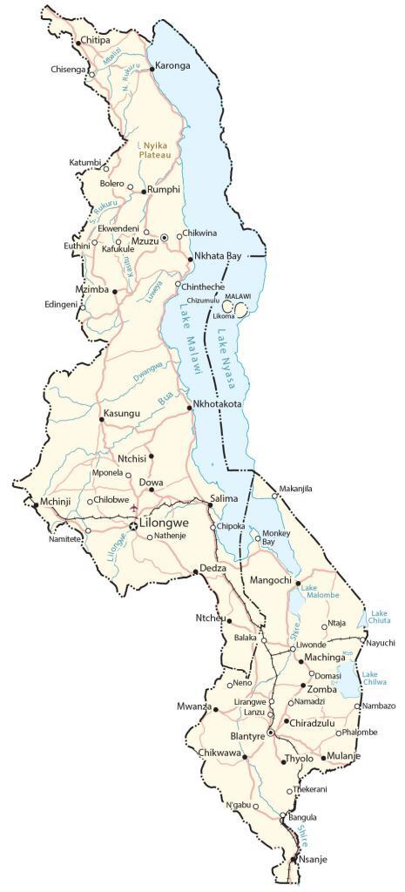

Malawi is a landlocked country located in Southeast Africa. It borders 3 other countries including Zambia to the west, Tanzania to the north, and Mozambique to the east. One of its most prominent features is the African Great Lake of Lake Malawi (also known as Lake Nyasa in Tanzania and Lago Niassa in Mozambique). Also, it’s one of the deepest lakes in the world today.
Lilongwe is the capital and largest city of Malawi. Other major cities are Blantyre, Mzuzu, and Zomba. Its nickname is translated to “The Warm Heart of Africa” because of its reputation for being friendly.
Go back home